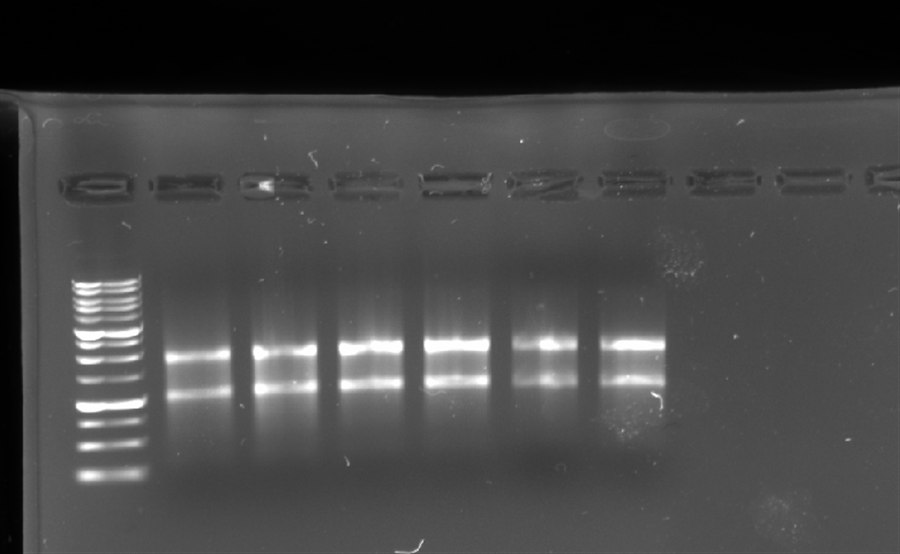

Basic science rotation
Lab Bootcamp
The laboratory sessions focused on using Rat2 fibroblast cell lines to teach us the methods of using RT-qPCR in RNA as well as protein quantification using western blotting. Each lab focused on one major step towards each technique every week.
These laboratory sessions also renewed my understanding of basic laboratory techniques and safety protocols such as pipetting, making polyacrylamide gel and performing separation.
RNA & RT-qPCR Labs 2–6
-
Lab 2 Isolation
Cell Culture & RNA Isolation
Subcultured Rat2 fibroblasts and isolated RNA from ascorbate-treated and control cells, to get RNA clean enough to reliably measure gene expression from.
-
Lab 3 Synthesis
Reverse Transcription & RNA Integrity
Removed trace genomic DNA and reverse-transcribed the RNA into cDNA, checking its integrity first so a degraded sample wouldn't undermine the rest of the experiment.

RNA integrity check — intact 28S/18S bands across lanes. -
Lab 4 Specificity
Primer Validation I — Gradient PCR
Ran a gradient PCR to find the annealing temperature at which each primer produced one specific product, since a non-specific primer would make later results uninterpretable.
-
Lab 5 Efficiency
Primer Validation II — Specificity & Efficiency
Confirmed each primer's specificity on a gel, then ran a dilution series to check it amplified efficiently enough to trust for quantification.
-
Lab 6 Expression
RT-qPCR Experiment
Ran the full qPCR experiment testing whether ascorbate treatment changes Collagen I expression.
Western Blot Labs 7–9
-
Lab 7 Quantification
Protein Isolation & BCA Assay
Isolated total protein from cell lysates and measured its concentration by BCA assay, to set up a fair comparison between normalization methods.
-
Lab 8 Separation
SDS-PAGE & Membrane Transfer
Ran the samples on an SDS-PAGE gel, which allows proteins to be separated solely by size by giving all samples a uniform negative charge.
-
Lab 9 Detection
Immunoblotting & Imaging
Fluorescently tagged our reference proteins using immunohistochemistry (IHC), which uses two sets of antibodies to bind to target proteins and express fluorescence.
Journal Club
Prior to each weekly lab, we took turns presenting and critiquing different scientific articles that were related to the methods that were going to be learned in the following lab session.
These journal meetings allowed us to critically analyse different laboratory techniques and how they were developed, which gave a deeper understanding for the laboratory work that we have done.
- Lab 2 Single-Step Method of RNA Isolation by Acid Guanidinium Thiocyanate–Phenol–Chloroform Extraction Chomczynski & Sacchi · Analytical Biochemistry, 1987
- Lab 4 qPCR Primer Design Revisited Bustin & Huggett · Biomolecular Detection and Quantification, 2017
- Lab 5 Product Differentiation by Analysis of DNA Melting Curves during the PCR Ririe, Rasmussen & Wittwer · Analytical Biochemistry, 1997
- Lab 6 Kinetic PCR Analysis: Real-Time Monitoring of DNA Amplification Reactions Higuchi et al. · Nature Biotechnology, 1993
- Lab 7 Applications of Western Blot Technique: From Bench to Bedside Meftahi et al. · Biochem. Mol. Biol. Education, 2021
- Lab 8 Human Adipose Tissue Protein Analyses Using Capillary Western Blot Technology Lu, Allred & Jensen · Nutrition & Diabetes, 2017
- Lab 9 Protein Kinase Cδ Expression in Breast Cancer as Measured by Real-Time PCR, Western Blotting and ELISA McKiernan et al. · British Journal of Cancer, 2008
- Extra Clearance of Senescent Cells Enhances Skin Wound Healing in Type 2 Diabetic Mice Samarawickrama et al. · Theranostics, 2024